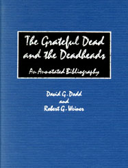

"What an amazing work--a labor of love and a definitive record. I had a feeling someone was out there, someone noticed... Thanks for collecting all the scattered bones, for making history come alive. And thanks for the memories!"
--Mickey Hart
March 1997
Here's what the advance readers are saying:
Dennis McNally
G.D. publicist and official historian.
"Catalogued here, for future researchers and Deadheads-to-come, are the interviews and scribes, the pop-crit ruminations and the academic nets cast, the nearly forgotten tales of would-be anthropologists gone native - a magician's library of hilarious and significant lore rescued from the abyss: all the luminous ephemera and era-defining milestones accumulated as the Dead streaked through the American sky on the trail of the Wild Good.
"Perhaps the best thing I can say about this exemplary record is that if it had existed before David Shenk and I wrote Skeleton Key, our job would have been much easier."
- Steve Silberman, co-author
Skeleton Key: A Dictionary for Deadheads
Where can I get a copy?
...I can hear you asking. You can order through Greenwood Press at their online catalog.